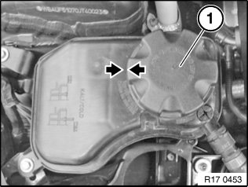
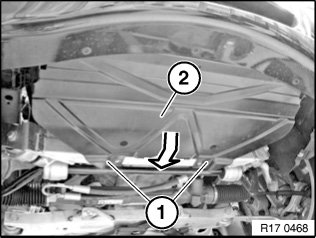
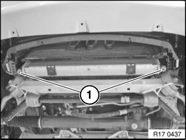
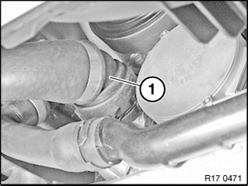
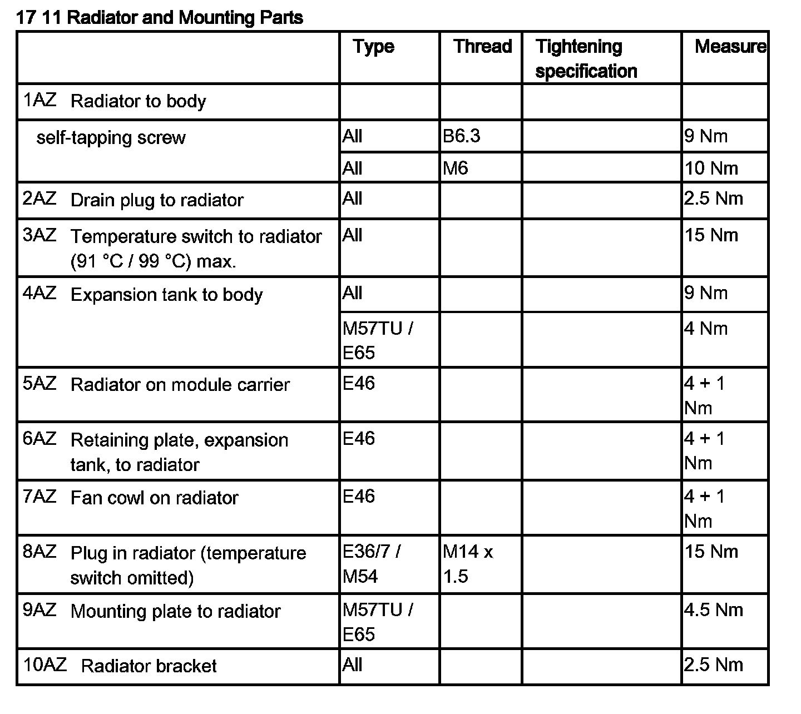
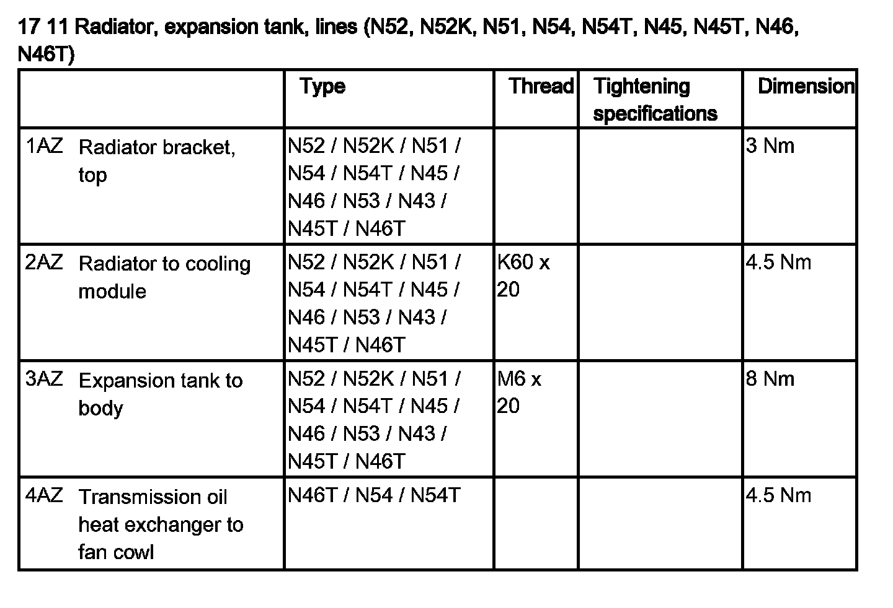

Coolant: Service and Repair
17 00 005 Draining and topping up coolant (N52, N52K, N51, N53)Special tools required:
Warning!
Risk of scalding!
This repair work on the cooling system should only be carried out on an engine that has cooled down!
Important!
Lifetime coolant filling:
Never reuse used coolant!
When replacing and removing components which rely on the corrosion protection effect of the coolant, it is essential to change the coolant. The cooling system must therefore be drained and refilled.
In the case of other removal work involving the draining of partial quantities of coolant, replace these quantities which have been drained with new coolant.
Installation Note:
Use only recommended coolant.
Observe mixture ratio.
Protective measures/rules of conduct:
^ Wear safety goggles
^ Wear protective gloves
^ Observe national/country-specific regulations
Important!
For dirt contamination of the cooling system (e.g. by engine oil), the cooling system must be rinsed with water until all dirt contamination is removed!

Important!
Risk of skidding due to coolant on the floor.
Danger of injury!
Catch and dispose of drained coolant in drip tray (1) and if necessary special tool 00 2 030 (universal hydraulic lifting equipment).
Recycling:
Observe country-specific waste disposal regulations.
Necessary preliminary work:
^ Follow notes for repair work on cooling system
^ Remove front underbody protection

Draining coolant:
Open sealing cap (1) on coolant expansion tank (2).
Installation Note:
Close sealing cap (1) until the arrow marks line up.

Unlock tabs (1) on front axle support and remove radiator cover (2) in direction of arrow.

If fitted, release drain connectors for coolant (1) on radiator at bottom. For radiators without coolant drain connector, unlock coolant hose and remove.
Drain, catch and dispose of coolant.
Installation Note:
Replace sealing rings.
Tightening torque 17 11 2AZ.
Unfasten and detach coolant hose (1) from thermostat housing.

Drain, catch and dispose of coolant.
Adding coolant:
Use only recommended coolant.
Observe mixture ratio.
Observe capacities.
Installation Note:
Observe bleeding instructions without fail.
Fill and vent cooling system.
Check cooling system for watertightness.

